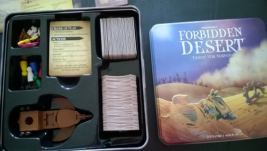

How to Play!
Set Up
- Examine the Tiles
Look at the 24 desert/city tiles
to get an idea of what they
look like on each side. (See
Special Tiles and Symbols
for more.) Then, turn them all desert-side up.
Important: You may not peek at the tiles
once thry've been turned over!
- Create the Desert
Shuffle the desert/city tiles and randomly place them desert
side up into a 5 x 5 square grid with a tile missing in the
middle, as shown to the right. Make sure that the tiles are all
oriented the same way, with the compass symbol in the top
left corner. Also, leave a small gap between the tiles.
This forms the Forbidden Desert and your pawns will move
on it like a game board. The hole in the center of the board
represents the Sand Storm which will "move" around the
board over the course of the game.
- Place Sand Markers
Add 8 Sand markers to the board as shown to
the right. Place them with the lighter colored
side (not the “X” side) facing up. Stack the rest
of the Sand markers in a pile near the board.
- Place the Flying Machine Parts
Remove the 4 parts from the flying machine and place
everything nearby. Your team will try to find these parts
buried in the city.
- Set the Sand Storm Level
Insert the Sand Storm meter into the holder and then place a
meter clip on it according to the number of players (bottom
corners) and level of difficulty you wish to play. (For example,
if you are three players and this is your first time playing a
cooperative game, set it to the Novice level, above the symbol
for three pawns.)
- Divide the Cards
Separate the cards into the Storm deck (red back), Equipment
deck (gear back), and Adventurer cards. Shuffle the Storm
deck and place it face down, just above the top of the desert,
with the compass symbol pointing away from the board to
indicate “North”, as shown below. Shuffle the Equipment
deck and place it face down to the side of the desert.

- The Adventurers Appear
Shuffle the 6 Adventurer cards and randomly
deal 1 to each player. Take a moment to read
aloud your role and powers written on the
front of your card so your teammates know
your strengths. (More details can be found in
[Meet the Adventurers]) You’ll find you need
to take advantage of each player’s special abilities in order to
win. The front left of your card also shows your adventurer’s
canteen. Take a meter clip and attach it to your card so that it
covers the top mark of your canteen (4 in most instances).
As you drink water, you’ll move this marker down.
Take a pawn matching the color of your
Adventurer card and place it on the “helicopter
crash” tile. Put any extra Adventurer cards and
Place meter in holder. Set difficulty level. pawns back in the box.
Order of Play
The thirstiest player goes first and play continues to the
left. On every turn, do the following things in order:
1. Take up to 4 actions.
2. Draw Storm cards equal to the Sand Storm level.
The parts of each turn are described below. Also note that every
Adventurer card shows a quick reference guide on the back.
1: Take Up to 4 Actions
You may take up to 4 actions each turn. (You can take 0, 1, 2,
3, or 4 actions.) Your teammates are allowed (and encouraged!)
to give you advice on the best actions to take during your turn.
Select any combination of the following actions:
| Move | Excavate |
| Remove Sand | Pick Up a Part |
Move:
You may move your pawn to an adjacent, unblocked tile for
1 action per move: either up, down, left or right, but never
diagonally. You may also move between unblocked tunnel tiles
for 1 action. (See “Tunnels”.)
A tile is considered “blocked” if
there are 2 or more Sand markers on it. You also may never
move through the empty space containing the Sand Storm.

Remove Sand:
You may remove Sand markers on your tile or on an adjacent
tile (up, down, left, or right) for 1 action per marker. When you
remove a Sand marker, place it back into the supply pile near
the board.
Excavate:
If your pawn is on the desert side of a tile that does not have any
Sand markers on it, you may excavate it for 1 action. Flip the tile
over so its “excavated” (city) side is facing up, making sure that
any icon is in the lower right corner, with relation to North. Then
follow the instructions for the symbol shown. (See “Special Tiles
and Symbols”.)
Note: You may not undo an excavate action. Once you flip a
tile, you have spent that action for your turn.
Pick Up a Part:
For 1 action you may pick up a revealed Flying Machine
part on an unblocked and excavated tile. Place the part in
front of you. Once your team has collected all four parts,
race to the Launch Pad where you can assemble the flying
machine and take off for the win!
Note: If the part is on an unexcavated tile, you must
first excavate before claiming it.
Bonus Action-Share Water and Pass Equipment:
In addition to the above actions, players on the same tile may
share water and pass equipment cards at any time during the
game for free. To share water, one player moves her canteen
meter down 1 or more tick marks and the other player moves his
water meter up the same number of tick marks.
Note: You may never have more than the maximum amount of
water indicated on your canteen at any time.
Special Tiles and Symbols
Water (3 tiles)
Three desert tiles contain a
water symbol in the bottom
right corner to indicate that
there may be water hidden
underneath. When you
excavate a tile with this
symbol and it reveals a well, every player with
a pawn currently on the tile may at once (and
only once) add two water to their canteens. You
may want to coordinate with other members
of your team to gather on this tile before you
excavate to get its full benefit.
Caution: One of the water tiles is actually a mirage! If you
excavate this tile, no one receives water.


Gear (12 tiles)

When you excavate a tile with this symbol in the
bottom right corner, you’ve discovered a valuable
piece of equipment that can help your team during
the game. Immediately draw the top card from the Equipment
deck, place it face up in front of you, and read its instructions.
Keep the card until you decide to use it. Important: Equipment
cards may only be used by the player who possesses them.
However, they may be passed for free at any time to another
player on the same tile. Most equipment can be played at any
time (see specifics on each card), though as a general rule they
cannot reverse the effects of Storm cards once they’ve been
drawn. No hand limit.
Part Location Clue (2 tiles for each flying machine part)


Hidden under the desert are clues to the
locations of the four flying machine parts.
There are two clues for each part which,
together point to the tile where the part can
be found: One clue indicates the row (the
East/West direction) and the other clue
indicates the column (the North/South
direction). When you reveal the second clue
for any part, immediately place that part on
the tile where the row and column intersect.
Tunels (3 tiles)

This ancient city featured an underground
system of tunnels—perfect for getting around
under protection from the desert sun.
You may move between any two excavated
Tunnel tiles for 1 action. However, you may
not move to a tunnel tile that contains two or
more Sand markers.
Tunnels also provide shelter from the effects of “Sun Beats
Down” cards. Pawns on these excavated tiles do not have to
drink water when a “Sun Beats Down” card is revealed. See the
“Draw Sand Storm Cards” section for further details.
Launch Pad (1 tile)

This ancient city featured an underground
system of tunnels—perfect for getting around
under protection from the desert sun.
You may move between any two excavated
Tunnel tiles for 1 action. However, you may
not move to a tunnel tile that contains two or
more Sand markers.
Tunnels also provide shelter from the effects of “Sun Beats
Down” cards. Pawns on these excavated tiles do not have to
drink water when a “Sun Beats Down” card is revealed. See the
“Draw Sand Storm Cards” section for further details.
2. Draw Sand Storm Cards
After taking actions, you must now take on
the role of the Sand Storm! Draw a number
of cards from the Sand Storm draw pile equal
to the current Sand Storm meter level. (For
example, if the level is at 3, draw 3 cards.)
Reveal the cards one at a time, with the wind
rose icon at the bottom, and place them near
the Storm discard pile. After drawing and
applying the cards, discard them face up into
the discard pile.
Note: You may look through the discard pile at any time
during the game.
Wind Blows
These cards “blow” the number of tiles
indicated by the number of squares
on the card into the hole on the board
(representing the eye of the sandstorm).
Any pawns, Sand markers, and/or flying
machine parts on the tiles move along
with the tiles as they are shifted.
For example, if the card shows ,
shift 2 tiles to the
left. Shift the tile that is immediately to the right of the hole
into the hole as shown:

After shifting the first tile, do this again for the next tile
that’s immediately to the right of the Storm

After moving each tile, add a Sand marker to each tile
that you just moved. Add sand to excavated tiles too—just
like any other tile.

There's no limit as to how much sand may pile
up on a tile. However, once you stack a second
Sand marker, that tile becomes blocked to all
movement until there is 1 or no marker on it.
Place the 2nd and higher (3rd, 4th, 5th, etc.)
Sand marker with the “X” side facing up to
indicate that the tile is impassable.
Note: If you ever have to place a Sand marker
on a tile that contains a flying machine part,
first lift the part off the tile, add the marker,
and then place the part back on top of the pile.


Dig Out
If your pawn is on a tile that has 2 or more Sand markers,
you become “buried” in the sand and must remove Sand
markers down to one or none before you can take any further
actions. Teammates may also spend actions during their turns
to help remove sand from a buried player’s tile.
Respite from the Storm
If there isn’t a tile to move (for example if you needed to move
another tile to the left), your team gets a respite from the storm
for that card (or portion of card). Nothing gets moved and no
Sand marker is placed for the missing tile.
Buried in the Sand
If you ever have to place a Sand marker on a tile and there are
none left in the supply, your team has been buried in the dunes
and loses the game!
Storm Picks Up

There are 3 Storm Picks Up cards in the
Storm deck. When you draw a Storm
Picks Up card, move the Sand Storm
meter up one tick mark. This is how
many cards you will draw, starting with
the next player’s turn. If the Sand Storm
meter reaches the skull and crossbones, the
Storm has become so intense that all players
are swept away by the wind and lose the game.
Sun Beats Down

There are 4 Sun Beats Down cards in the Storm
deck. When you draw a Sun Beats Down card,
all players that are not currently on a tile containing
a Tunnel or protected by a Solar Shield must drink
1 water. (Lower the water meter
on your canteen to the next lower
tick mark.) If any player reaches the
symbol on their canteen, that
adventurer succumbs to thirst and
the entire game ends in defeat.
When the Storm Draw Pile Runs Out
When the Storm draw pile runs out, immediately shuffle the
Storm discard pile and stack the cards face down to form a new
Storm draw pile. If this happens in the middle of a turn, continue
drawing Storm cards as necessary from the new pile.
Game End
Winning the Game
Get to the Launch Pad! Once you have the four necessary parts,
all players must find their way to the Launch Pad tile where
everyone can insert the parts into the flying machine, start the
engine, and escape for the win. Remember: The Launch Pad tile must
be unblocked in order to enter it and/or take off for the win.
Losing the Game
There are 3 possible ways to lose:
- Thirst: If any player reaches the skull and crossbones symbol on their canteen.
- Buried: If you need to add a Sand marker to a tile but there
aren’t any left in the supply
- Swept Away: The Sand Storm meter reaches the skull and crossbones symbol.
Top of Page
Set Up
Order of Play
1. Actions
Special Tiles/Symbols
2. Draw Sand Storm Cards